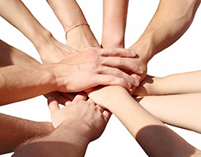
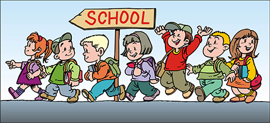

Helping hands
 In order to help and support physically and mentally challenged children, with the help of philantropic individuals and corporate organizations, we have initiated a noble program.Anybody can be a member of this program by donating rupees
thousand for a year.
The amount thus collected will be utilized for the projexts of KIDS
Special School especially for the development of different abilities of
such unfortunate children of the society.
 It is truly a herculean task to inculcate self-independence among the physically and mentally challenged children in view of the gravity and seriousness of their problems and the intricacies involved in the methods aimed at dealing with it.
We have to train them to activate their other faculties which may be subtle so that these children can be trained to attend to their day to day activities and make a modest earning lest they are considered burden to their families and/or the society of which they are very much an integral part.
KIDS Special School is an attempt with this broader objective in view.